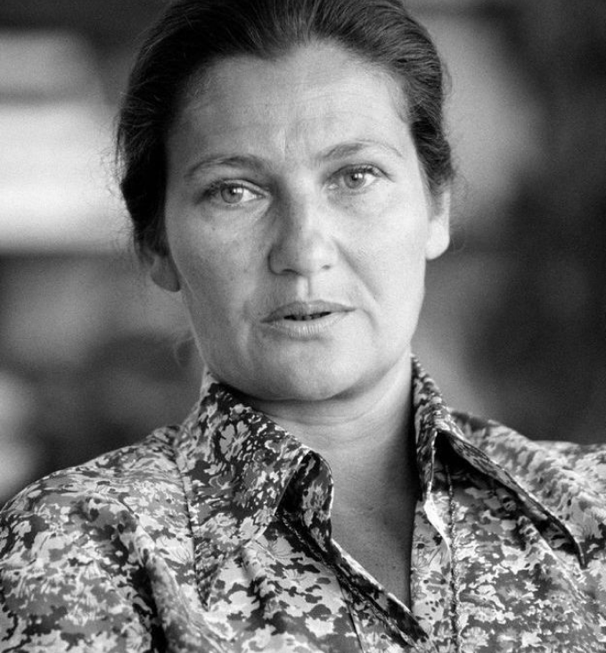

En savoir +

Envie d’apprendre encore plus ?
Pas d’inquiétude ! Vous êtes au bon endroit.
Venez enrichir votre culture
en naviguant dans d’autres différentes catégories
Entre notre galerie d’images des femmes du féminisme,
la frise ou encore le glossaire.
Plus rien ne vous échapperas !
Galerie
N’hésitez pas à swipe vers la droite
pour découvrir notre
galerie d'image!

-
Christine de Pizan
Première femme écrivaine ayant vécu de ses écrits
-
Olympe de Gouges

Première femme féministe
-
Lv Bicheng
Elle devient la première femme rédactrice en chef d’un journal
-
Frida Kahlo
Célèbre artiste peintre mexicaine et
une féministe engagée -
Clara Zetkin
On lui doit en partie la
journée de la femme -
Simone de Beauvoir
Théoricienne importante du féminisme
-
Simone Veil
Crée la loi Veil qui lutte contre l’interdiction de l’IVG
-
Malala Yousafzai

Jeune militante pakistanaise des droits des femmes